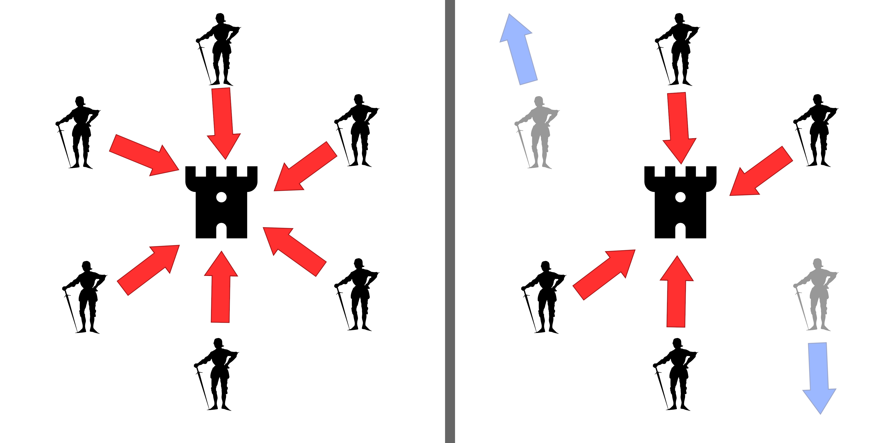
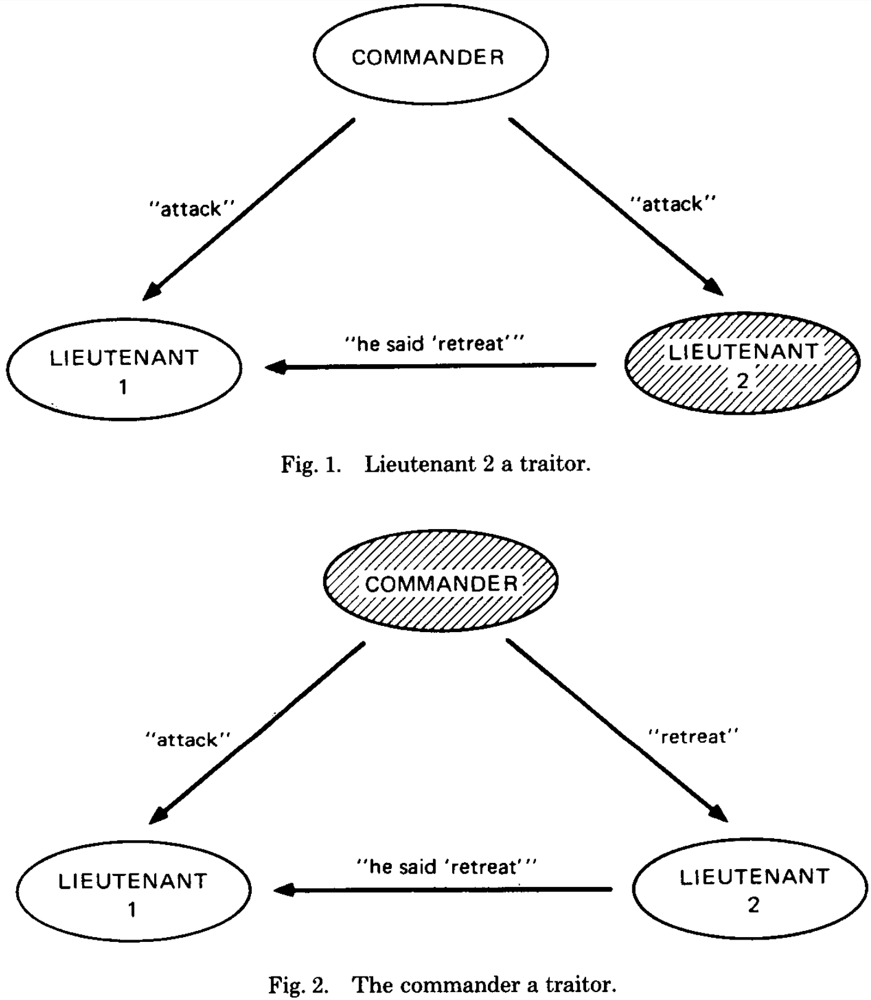

11 Byzantine broadcast
Announcements
- Please pick up your card
- HW 4 due Thursday at 8pm, with a grace period until Friday at 10pm (NIST beacon)
- HW 5 will be posted later today and due Wednesday 10/14 at 8pm
- Lab 7 on this week’s reading (Shi chapters 5-6)
Learning outcomes
By the end of today’s lecture, you will learn:
- How to broadcast a message \(m\) from one party to many others, such that everyone receives \(m\) and knows that everyone else received \(m\) too
- A formal specification of the broadcast problem, and the various kinds of assumptions we might make about the parties and the network connecting them
Review from last lecture
Unit 2 of this course is about protecting data availability, so that people can speak on the Internet and everyone reaches agreement (or consensus) on what they said.
Bitcoin and its underlying blockchain ensure that:
- Nobody can censor you from talking to your friends
- If you send a message to a large group, then everyone can agree about what you said (even if some people in the group are trying to cause confusion)
Bitcoin is decentralized and permissionless system that achieves agreement without relying on any trusted intermediary. In fact:
- Miners can enter or leave the network at any time (as long as the majority of hash-mining power is honest)
- Ordinary clients and nodes can be pseudonymous (they do not have a long-term identity)
- Relatedly, communications between parties are not authenticated (there were no MACs in Bitcoin)
11.1 Components of Bitcoin
At its core, Bitcoin carefully constructs and combines two components:
- Leader election: a randomized lottery system to decide which miner gets to create the next block
- Broadcast: a connected peer-to-peer network of Bitcoin nodes and miners that gossip any transaction or block they hear, in a way that is censorship-resistant
Bitcoin’s proof of work ensures that everyone eventually agrees on the state of the blockchain, as long as the majority of computational power is controlled by honest miners.
- But relying on the honest majority of computing power is admittedly somewhat strange
- It would be nice instead to rely on the honest majority of people: that is, that there are more good people than malicious people in the world
The reason that Bitcoin requires an honest majority of computing power is to protect against Sybil attacks, in which one malicious person Mallory claims to be many different people in an attempt to increase its chance of winning the randomized leader election.
But what if we already knew the set of participants ahead of time? For instance, what if we want to create a blockchain among all the students in this class?
- Then we wouldn’t need to protect against Sybil attacks
- It’s not possible for you to pretend to be 100 different students in order to inflate your power in a randomized leader election
This week, we ask the question:
Can we build a blockchain to achieve consensus on messages sent over the Internet with no proof of work? No miners? Maybe not even a cryptocurrency?
11.2 The Byzantine generals problem
In this course, we will think about how to achieve agreement in scenarios where everyone cannot meet together in the physical world. Our starting point is a famous problem in computer science called the Byzantine generals problem.
It was initially posed in a 1982 paper by Leslie Lamport, Robert Shostak, and Marshall Pease as follows.
“Imagine that several divisions of the Byzantine army are camped outside an enemy city, each division commanded by its own general. The generals can communicate with one another only by messenger. After observing the enemy, they must decide upon a common plan of action. However, some of the generals may be traitors, trying to prevent the loyal generals from reaching agreement.”


Note that there are two important goals to satisfy in this problem:
The loyal (i.e., honest) generals must be consistent. They could all decide to
Attack, or they could all decide toRetreat. But if the army is divided, then they will fail for sure.One general, called the “commander,” instructs the group whether to
AttackorRetreat. If the commanding general is loyal, then all loyal generals should validly obey this order.
Consensus in the physical world
If the generals were all physically gathered in a common room, then we can solve this problem in two steps:
- Leader election: Elect one general to be the commander
- Broadcast: The commanding general shouts in the classroom whether to
AttackorRetreat, and all loyal generals obey this order
It doesn’t matter who the commanding general is, as long as all loyal generals agree on the result of the election. The commander could even be a traitor (i.e., malicious). Still we would achieve our desired goal, which is that all loyal generals perform the same action.
We will solve the leader election problem in the next lecture. For today, suppose that has already happened. Our goal for today is to solve the Byzantine Broadcast problem.
11.3 Byzantine Broadcast
In the Byzantine Broadcast problem, the generals are not in a common room.
- There are \(n\) generals, of which \(t\) generals are secretly malicious
- Everyone knows each other’s identities: in particular, one general is already known to everyone to be the commander, and the other generals are called lieutenants
- The generals can only talk via one-to-one authenticated communication (e.g., using MACs or trusted messengers)
The commander would like to propose an Attack or Retreat order to all generals, such that:
- All honest generals reach the same decision
- If the commander is honest, then all honest lieutenants will obey the commander’s order
Interactive question. What is a simple protocol that the honest generals can follow that is guaranteed to achieve objective 1 (but not objective 2)?
- Always
Retreat, no matter what the commanding general tells them - Blindly follow whatever order the commanding general tells them
- Take a majority vote of all generals, and follow what they say
Interactive question. What is a simple protocol that the honest generals can follow that is guaranteed to achieve objective 2 (but not objective 1)?
- Always
Retreat, no matter what the commanding general tells them - Blindly follow whatever order the commanding general tells them
- Take a majority vote of all generals, and follow what they say
Bounds on consensus
The challenge in the Byzantine generals problem is to design a single protocol that satisfies both objectives. Suppose that:
- There are 3 generals, 1 of whom is malicious
- You are one of the two lieutenants
- The commander sends their order, and then each lieutenant gossips what they heard
You know that you are honest, but you have no idea which other person to believe.
The other lieutenant might be malicious, so you cannot simply ask them to gossip what they heard from the commander because they might lie
The commander might be malicious, so you cannot blindly trust their order because they might send different orders to the two lieutenants

It turns out that there is no way for the 3 generals to solve this problem.
Theorem 11.1 (Fischer, Lynch, and Merritt 1985) Byzantine Broadcast is impossible using only authenticated pair-wise channels if at least \(1/3\) of the generals are malicious.
Proof. Shown in Shi, section 4.
But all hope is not lost! There are two ways to overcome this problem.
- Add one more lieutenant, so that there are 4 total generals (1 of whom is malicious)
- Require a public key infrastructure (PKI) and use digital signatures
11.4 Defining Byzantine Broadcast
Let’s move away from the world of generals and to the world of computers.
- We refer to the \(n\) computers as parties, and to the commander as the leader
- Rather than talking about the orders
AttackandRetreat, instead let’s consider a message \(m\) that is a bitstring (e.g., a single bit0or1)
As with everything in this course, we cannot build secure systems in a vacuum.
- It is necessary to make some assumption about the world in order to construct Byzantine Broadcast
- But we want to limit and understand the amount of trust that we must place in others
There are several possible assumptions about the world that we could leverage to build Byzantine Broadcast.
- Number of malicious parties: we could assume that there exists
- an honest supermajority of \(t < \frac{n}{3}\), so more than 2/3 of the parties are honest
- an honest majority of \(t < \frac{n}{2}\), so more than 1/2 of the parties are honest
- a dishonest majority of \(t < n\) malicious parties, so you might be the only honest party
- Modeling the network:
- synchronous networks assume a known upper bound on the time it takes for a message to travel between two parties
- asynchronous networks make no such assumption
- in both cases, if an honest party sends a message, then the message is eventually received
- Use of digital signatures:
- authenticated pair-wise channels only assume that every pair of parties has a shared MAC key
- with a PKI, everyone also knows the everyone else’s digital signing public key
Whereas Bitcoin works over asynchronous networks, for the rest of Unit 2 we will study synchronous network connections that are fast and reliable.
Definition 11.1 (Byzantine Broadcast) A synchronous Byzantine Broadcast protocol must satisfy three requirements.
- Termination: all honest parties eventually complete the protocol and output a message
- Validity: if the leader is honest and sends the message \(m\), then all honest parties should output \(m\)
- Consistency: all honest parties should output the same message (whether or not the leader is honest)
11.5 Constructing Byzantine Broadcast
In the remainder of today’s lecture, we will construct a Byzantine Broadcast protocol that provides termination, validity, and consistency in the following setting:
- Any number of parties \(n\), with an honest supermajority of \(n \geq 3t + 1\)
- Synchronous network
- Authenticated pairwise channels (i.e., you know who you’re talking to), but no PKI or other setup
- The message \(m \in \{0, 1\}\) is a single bit (note: the idea can be extended to support longer bytestrings)
Here is the high-level idea of today’s protocol, which is called the phase-king protocol. Before the protocol starts, the parties are open-minded about what the output message will be (either 0 or 1)
- Starting with the leader, every party gets a turn to broadcast a message
- The parties check to see if they have reached consistency on the message: if so, they keep this message no matter what happens in later rounds, otherwise they remain open-minded
We start by building the consistency check protocol (to perform step 2). It is called Gradecast.
11.6 The Gradecast protocol
Let there be \(n\) parties, which we label as \(P_1, P_2, \ldots, P_n\). The Gradecast protocol is not about broadcasting a message. Instead it is about checking whether the parties have already reached consensus about the message.
- Each party \(P_i\) has an input message \(m_i \in \{0, 1\}\)
- Each party has two outputs: a (potentially changed) message \(m\) and a grade \(g\) that reflects their knowledge about the message
The grades reflect party \(P_i\)’s answer to the question “does everyone in the group have the same message?” In other words, the grade reflects party \(P_i\)’s belief in the mutual knowledge of \(m\).
Here are the possible grades.
Satisfactory: Party \(P_i\) is confident that all honest parties know same message \(m\) (even if others are not yet equally confident)Close: Party \(P_i\) believes that there are many honest parties who know the message \(m\), but isn’t sure yet whether this message is known to all honest partiesInsufficient: Party \(P_i\) has no confidence in its current message
Our goal is to design a protocol that allows the parties to reach similar levels of confidence, in the sense that their grades will differ by at most one.
In more detail, we want to design the Gradecast protocol to have the following security requirements.
Knowledge of Agreement: If an honest party outputs a message with grade of
Satisfactory, then all honest parties output this message. That is: we will have mutual knowledge, even if some parties are not yet convinced.Validity: If all honest parties have the same input message, then all of them output this message with a grade of
Satisfactory. In this case, we have moved closer to common knowledge – every honest party knows \(m\), and knows that the other parties know \(m\).
The protocol
Here is how we can build a Gradecast protocol.
This protocol is shown from the perspective of a single honest party \(P_i\). All honest parties follow the same procedure (whereas malicious parties can do whatever they want).
input: each party P_i holds a message m_i
Round 1: party P_i sends m_i to all parties
Round 2: if n-t distinct parties sent some message x to party P_i in round 1,
then send x to all parties
else send nothing
output: if n-t distinct parties sent some message y to party P_i in round 2,
then output y with grade 'Satisfactory'
else if t+1 distinct parties sent some message y to party P_i in round 2,
then output y with grade 'Close'
else output m_i with grade 'Insufficient'When an honest party \(P_i\) sends a message to “all parties,” this includes themselves! As a result, when we count the “number of distinct parties” that sent a message to party \(P_i\) we also include \(P_i\)’s message to their future selves in this count.
In other words: honest parties continue to be influenced by their own prior beliefs, but are not driven purely by it. If a supermajority of people disagree with them, they will change their vote between rounds 1 and 2.
At first glance, it might appear that this pseudocode is not well-defined.
In round 2: what if an honest party hears two different messages \(x\) and \(x'\) from \(n-t\) distinct parties in round 1?
At the output stage: what if an honest party \(P_i\) hears two different messages \(y\) and \(y'\) from \(t+1\) distinct parties in round 2?
Fortunately, it turns out that both of these issues cannot occur! (Try to convince yourself of this claim.)
Analysis of the Gradecast protocol
Let’s show that this Gradecast protocol achieves validity and knowledge of agreement, as long as \(n \geq 3t+1\).
We begin with validity, which if you recall is defined as:
If all honest parties have the same input message, then all of them output this message with grade
Satisfactory.
Theorem 11.2 The Gradecast protocol satisfies validity.
Proof.
- If everyone starts with the same message \(m\) and \(n−t\) parties are honest, then at least \(n-t\) parties will send \(m\) in round 1.
- As a result, at least \(n-t\) parties will send \(m\) in round 2.
- Hence, all honest parties output message \(m\) with grade
Satisfactory.
It is slightly more complicated to prove the knowledge of agreement property. As a starting point, let’s prove the following lemma.
Lemma 11.1 No two honest parties \(P_i\) and \(P_j\) send conflicting round 2 messages.
Proof. Suppose for the sake of contradiction that:
- Honest party \(P_i\) sees \(n−t\) round 1 messages for \(x\), and
- Honest party \(P_j\) sees \(n−t\) round 1 messages for a different value \(x' \neq x\)
By the pigeonhole principle:
- Any two sets of \(n - t\) parties (out of \(n\) total parties) must have at least \(n - 2t \geq t + 1\) parties in common
- Since at most \(t\) parties are malicious, at least one of the common messages must have been sent by an honest party \(P_h\)
However, honest parties always send one consistent message to everyone in round 1. So this is a contradiction!
Now we can prove the knowledge of agreement property, which states:
If an honest party outputs a message with grade
Satisfactory, then all honest parties output this message.
Theorem 11.3 The Gradecast protocol satisfies knowledge of agreement.
Proof.
- If an honest party has grade
Satisfactory, then it sees at least \(n−t\) round 2 messages - In this case, all honest parties see at least \(n−2t \geq t+1\) round 2 messages (only the \(t\) messages from malicious parties could be different)
- From Lemma 11.1 above, we know that there cannot be \(t+1\) round 2 messages for any other message
- As a consequence, all honest parties output \(m\), with a grade of either
CloseorSatisfactory
11.7 The phase-king protocol
Finally, let’s construct the phase-king protocol. The name comes from the fact that everyone gets a turn being the “king.”
There are actually many variations of the phase-king protocol. I will present just one of them in this class.
The phase-king protocol proceeds in a sequence of \(t+1\) phases, each of which requires 3 rounds of interaction. In each phase:
One party is chosen to be the king and gets to select a message \(m\) to send to the others. The real leader \(P_1\) is the first king, and then party \(P_2\), then \(P_3\), and so on.
When a party receives this message:
- If the party is already happy with their message from previous phases (meaning that they have a Gradecast grade of
Satisfactory) then they ignore the current king. - Otherwise, the party adopts the message sent by the king.
- If the party is already happy with their message from previous phases (meaning that they have a Gradecast grade of
The parties run Gradecast to determine whether they have reached agreement on the message.
Here is some pseudocode that describes this protocol in detail. It is written from the perspective of a single party \(P_i\). Every honest party runs the same code.
input: m # at the start, only the leader has an input
# everyone else is clueless
# initialize the grade
grade = 'Insufficient'
for each phase j from 1 to t+1:
# first round of the phase
party P_j sends its message to all parties (other parties send nothing)
if grade != 'Satisfactory',
then m := message received from party P_j
# remaining two rounds of the phase
(m, grade) := Gradecast(m)
output:
at the end of round 3(t+1), output vThis protocol achieves our goals for Byzantine Broadcast.
Theorem 11.4 The phase-king protocol achieves termination, validity, and consistency.
Proof. This protocol clearly terminates after \(3(t+1)\) rounds.
To see that validity holds:
- An honest leader, in the first round, sends the same message \(m\) to everyone
- As a result, the validity property of the Gradecast protocol ensures that everyone outputs \(m\) with a grade of
Satisfactory - Thereafter, the honest parties ignore all proposed messages by future kings, and their final output is \(m\)
Proving the consistency property is more complicated. Recall that we anoint \(t+1\) different kings, in sequence. Since there are only \(t\) malicious parties, at least one king is honest.
Let \(P_j\) denote the first honest king. We’re going to split our discussion into three parts.
At the end of phase \(j-1\):
- It might be the case that no honest parties currently have a grade of
Satisfactory. In this case, they will be open-minded and listen to the honest king. - Or it might be the case that some honest party has a grade of
Satisfactoryalready. In this case, Gradecast’s knowledge of agreement property guarantees that all honest parties (including \(P_j\)) also have the same message.
During phase \(j\):
- The honest king \(P_j\) will send its message to all parties. Anyone who didn’t already have a grade of
Satisfactorywill switch to it. If anyone did have a grade ofSatisfactory, then there’s no need to switch because the honest king sent the same message. - Validity of the subsequent Gradecast protocol ensures that, after phase \(j\), all honest parties will have the same message \(m\), with a grade of
Satisfactory.
After phase \(j\): the honest parties ignore all proposed messages by future kings, and their final output is \(m\). This completes the proof of consistency.
Efficiency of phase-king
Let’s conclude today by looking at the efficiency of the phase-king protocol. Admittedly, it is not the fastest protocol at performing the task of Byzantine Broadcast and there are faster alternatives.
Phase-king requires \(3(t+1)\) rounds of interaction. It can be shown that any deterministic protocol for Byzantine Broadcast requires at least \(t+1\) rounds, so phase-king requires \(3\times\) more rounds than necessary.
Phase-king requires \(O(n^3)\) messages to be exchanged between the parties. It turns out that there are alternative ways to perform Byzantine Broadcast that only require \(O(n^2)\) messages – that is, about the number of messages required for all pairs of parties to communicate with each other.
Finally, let’s compare the Dolev-Strong protocol (shown in the appendix) with the phase-king protocol that we discussed today.
|
|
Dolev-Strong |
Phase-King |
|---|---|---|
|
Number of malicious parties |
\(t \leq n\) | \(t \leq \frac{n-1}{3}\) |
|
Synchronous network |
YES | YES |
| PKI |
YES |
NO |
|
Number of rounds |
\(t+1\) | \(3(t+1)\) |
Next time, we will discuss how to use synchronous Byzantine Broadcast in order to build a permissioned blockchain.
11.8 Appendix: Dolev-Strong protocol
[Note: this appendix follows the Decentralized Thoughts blog.]
The Dolev-Strong protocol solves the Byzantine Broadcast problem in the following settings:
- Dishonest majority (there can be as many malicious parties as Mallory wants, i.e., \(t \leq n\))
- Synchronous network
- Uses authenticated pair-wise channels and digital signatures with a PKI
Let’s number the parties from \(1\) to \(n\). By convention, let’s say that the leader party is #1.
We are going to do something similar to the two round Commander-Lieutenant protocol from the Lamport, Shostak, Pease 1982 paper, but we will add digital signatures to the messages in order to distinguish between the two bad cases of a malicious commander vs. a malicious lieutenant. Note that:
- MACs only allow Alice and Bob to know that they are communicating with each other
- Digital signatures also allow Bob to receive a signed message from Alice and transfer this message along to another party Carol, so that she will also know what Alice said
First attempt
Here is our first attempt at a protocol. It has two rounds of communication, after which each party decides whether to output the message \(b = 0\) or \(b = 1\).
In the pseudocode that follows, we will use the notation sign(m, i) to mean “a digital signature of the message \(m\) by party number \(i\).”
Input: leader has a bit b, other parties have no input
Round 1: leader (party 1) sends message <b, sign(b,1)> to all parties
Round 2: if party i received <b, sign(b,1)> from the leader in round 1,
then add b to set B_i and send <b, sign(b,1)> to all parties
End of round 2:
if party i receives <b, sign(b,1)> from anyone
then add b to B_i
Output:
if the set B_i contains only a single message b,
then output b
else output a default message (say, 0)In words, here’s another way to describe the protocol:
- In the first round, the leader sends its message \(b\) to all parties. At least, the leader will do this if they’re honest… otherwise they might send different messages to different parties!
- The other parties only listen in the first round. If they hear a message, then in round 2 they will gossip this message in the second round. Note that their round 2 message
<b, sign(b,1)>is the message together with a signature by the leader, not by themselves! - After the 2 rounds are complete: each party checks to see whether all of the signed messages from the leader are consistently \(b = 0\) or consistently \(b = 1\). If so, they output that result. But if they have received no valid signatures, or valid signatures of both messages
0and1, then the leader is clearly malicious and the party falls back to a default output of \(b = 0\).
Question. Does this protocol satisfy the Termination, Validity, and Consistency requirements of a Byzantine Broadcast protocol?
This protocol clearly terminates after two rounds. Also it satisfies validity, which says that if the leader is honest and wants to broadcast the bit \(b\), then everyone will hear it. In fact, everyone will hear this message directly from the leader in round 1.
Hence, all honest parties will gossip this message in round 2; the malicious parties might choose not to do this, but that’s okay. Thanks to the unforgeability of the digital signature scheme, the malicious parties cannot forge the honest leader’s signature on the wrong message \(1 - b\).
Ergo: at decision time, the honest parties only hear the leader’s bit \(b\), so they will output \(b\).
It seems like the protocol satisfies consistency too.
- Suppose the leader tries to cheat and send two different messages \(b = 0\) and \(b = 1\) to two different honest parties in round 1.
- Then in round 2, those honest parties will forward these signed messages to everyone else.
- Hence, at decision time, everyone will know that the leader is malicious, and all of them will output the default bit 0.
However, the previous argument is incomplete. Here is a counter example involving a malicious leader that breaks consistency:
- The malicious leader doesn’t send any messages in round 1.
- In round 2, the leader sends the bit 1 only to half of the honest parties. Those honest parties will finish with bit 1, but the others will finish with the default bit 0!
The main problem here is that (some of) the honest parties only learned their message in the last round. They haven’t yet had any time to tell the honest parties about the leader’s message, because it was the last round and there’s no more time to send messages.
And we do need for there to be a “last round,” or else the protocol could go on forever and not terminate.
Signature chains
Dolev and Strong show a very elegant way to guarantee consistency, even if the message decided is revealed to some of the honest parties in the last round.
It is based on the idea that for the leader’s message to be approved by honest participants, they need to see the message signed by at least one honest party!
Remember that the parties have no idea who else is honest. The only thing we know for sure is that there are at most \(t\) malicious parties. So if any message has been approved by \(t + 1\) other people, then by the pigeonhole principle, at least one of them is honest!
As a result, the Dolev-Strong protocol runs for \(t + 1\) rounds. When an honest party receives a message from the leader, it forwards it along and adds its own signature on top of it. In some sense, the honest party is endorsing any message that it receives.
By the last round, an honest party should only accept a message if it sees \(t + 1\) signatures on it.
More specifically: the objective is to (eventually) show all parties a signature chain where the message is initially signed by the leader and then by \(t\) other parties too.
You can think of a signature chain as though each party is appending its name to the bottom of a contract. So you could see:
- a message that was initially signed by party 1,
- and then that signed document is also signed by party 2,
- and then that double-signed document is also signed by party 3, and so on.
The honest parties do not know which other people among them are honest.
Even so: if anyone sees a message with \(t+1\) distinct signatures, then they know for a fact that at least one signature comes from an honest party (by the pigeonhole principle). The key idea in the Dolev-Strong protocol is that everyone can rely on that honest party to have made sure that everyone else saw the message too.
The actual protocol
To construct the signature chain in a way that satisfies the consistency rule, the Dolev-Strong protocol uses a powerful idea that we will see several times in protocols that use a synchronous network:
The validity of a message is a function also of the time it is received!
Here is the Dolev-Strong protocol. We describe the first round, all other rounds, and then the output decision rule.
Remember that as always, we can only prescribe the actions of the honest parties. Malicious parties can do whatever they want; they don’t have to obey this procedure.
The input and first round remain the same as with our initial attempt.
Input: leader has a bit b, other parties have no input
Round 1: leader (party 1) sends message <b, sign(b,1)> to all partiesNow let’s see how each party \(i\) acts in every subsequent round \(j\) from 2 to \(t+1\).
In round \(j\), an honest party will review the messages it has received from the previous round \(j-1\), and if any message has been validly signed by \(j-1\) other people (starting with the leader) then it will apply its own signature and forward along to everybody else. (Otherwise, an honest party sends nothing in this round.)
Round j: for each message m received by party i in the previous round j-1:
if m is a valid (j-1) signature chain on v, then:
add b to the set B_i
send <m, sign(m, i)> to all partiesA \((j-1)\) signature chain for message \(m\) is deemed to be valid by party \(i\) if all of the following are true:
- Each signature is valid for the message (\(M\) + all prior signatures)
- The signature chain has length \(j-1\)
- The first signer of the signature chain is the leader
- All signers in the chain are distinct
- Party \(i\) is not in the signature chain
Finally, after all \(t+1\) rounds are complete, the output decision rule is the same as in our initial attempt.
Output:
if the set B_i contains only a single message b,
then output b
else output a default message 0Necessity of \(t+1\) rounds
Question. If we were to modify the protocol above to stop at \(t\) rounds instead of \(t+1\) rounds, can you come up with an attack against it?
Answer. Assume that the input bit \(b\) is 1, and that the leader is malicious. Nobody sends anything for the first \(t - 1\) rounds. Just before round \(t\) finishes, all the malicious parties will send the message \(b = 1\), signed by all \(t\) of them, to one honest party \(p_i\).
This honest party would see it but it won’t be able to send it to any party because the round has finished! That honest party alone would finish with \(1\) while every other honest party finishes with \(0\), so the honest parties have not agreed on a consistent answer.
The actual Dolev-Strong protocol avoids this issue by having \(t + 1\) rounds. This way, an honest party must be part of a signature chain that is sent in the final round.
Analyzing Dolev-Strong
The real Dolev-Strong protocol (with \(t+1\) rounds) satisfies all the requirements of a Byzantine Broadcast protocol.
Termination and validity hold for the same reason as in the first attempt. The protocol clearly terminates after \(t+1\) rounds of interaction, and if the leader is honest then everyone will receive the same message in the first round and begin the process of co-signing it in future rounds.
Let’s reason about consistency.
If an honest party receives a \(k\) distinct signatures for a bit \(b\) at the end of round \(k\), where the first signature is from the leader, then it will send it to all honest parties in round \(k+1\). This holds for all rounds except the final round \(t+1\).
But since the honest party can only receive \(t+1\) distinct signatures for a given bit \(b\) in round \(t+1\) (and not send anything), and a there is least one signature from an honest party \(P_h\), then \(P_h\) must have already sent \(b\) along with the proper signatures to all other honest parties.
Thus, every bit received by one honest party will be received by all other honest parties. If two different bits have been propagated to two different honest parties by a malicious leader, then all honest parties will detect it and default to the bit \(0\).
Amazingly, consistency holds no matter how many malicious parties there are!
If \(t = n\), then everyone is malicious so there are no honest parties to protect. (This case is somewhat boring.)
If \(t = n - 1\), then consistency says that all honest parties must agree on the output. There is only one honest party, and obviously it agrees with itself. (This case is also rather trivial.)
If \(t = n - 2\), then consistency says that both of the two honest parties have agreed on the answer, even if they’re surrounded by \(n - 2\) adversaries all around them! That’s amazing!
In this way, Dolev-Strong’s protocol achieves an even stronger level of security than Bitcoin, which required an honest majority. But this is not an apples-to-apples comparison, since Bitcoin is doing much more than letting one person broadcast a single message to the world.
In order to solve the broadcast problem, the Dolev-Strong protocol did need to make some other strong assumptions:
- Knowledge of who the other parties were, so that nobody could conduct a Sybil attack.
- Public key infrastructure (PKI), so that signatures could be transferred from one party to another.
- Synchronous network, so that parties would know when each round ends and the next one begins.
Next week, we will see other ways to construct a broadcast protocol with fewer of these requirements.